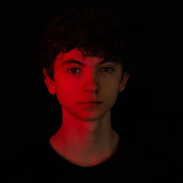
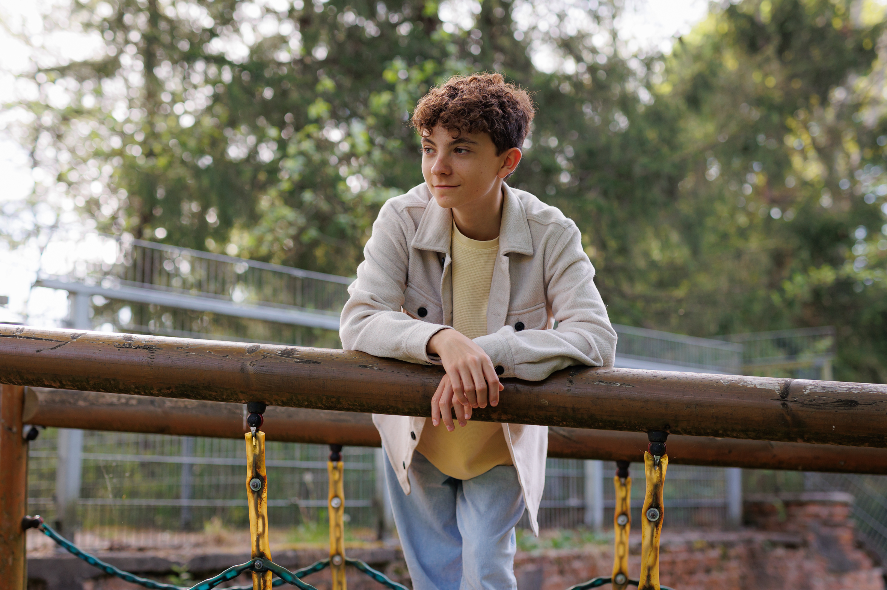
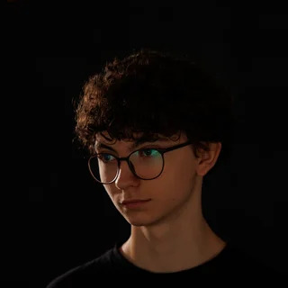
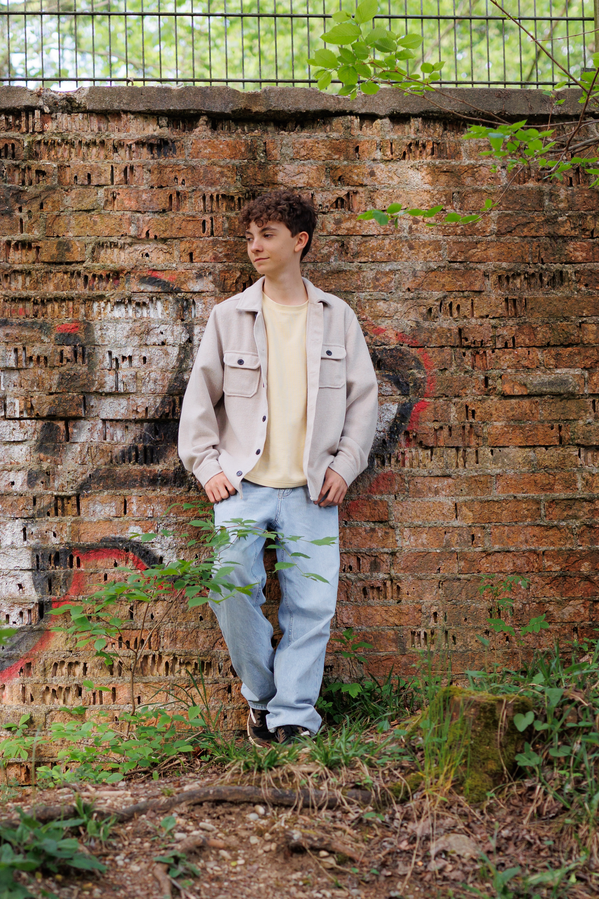

Fabian Ziems
Sänger/Schauspieler
[ueber-mich-text]
Auftritte
Songs
Werdegang
Foto: Foto: Zum Glück zurück - all in production / ZDF
Fabian spielte 2020 seine erste Rolle als Lenny Sandmeier in dem ZDF-Film „Zum Glück zurück“. Danach folgten weitere Filme und Serien in ZDF und ARD
Foto:
In dem im Festspielhaus Neuschwanstein aufgeführten Musical „Ludwig“ spielte Fabian von 2019 bis 2020 die Rolle des Kronprinzen Ludwigs.
Foto: Foto: schall-foto.de
Seit 2022 ist er Mitglied des Showensembles „Joy of Voice Stage Art“ in Memmingen und steht dort regelmäßig sowohl als Solist als auch im Ensemble auf der Bühne.
Foto: The Voice Kids - Joyn / Claudius Pflug
Fabian trat erstmals als Sänger im Fernsehen auf, als er im Jahr 2025 an der 13. Staffel der deutschen Gesangs-Castingshow The Voice Kids teilnahm.
Foto:
Am 19.12.2025 erschien Fabians erste Debut-Single „Alles Anders“ auf allen gängigen Streaming-Plattformen.
Für Autogrammanfragen:
Schicke bitte einen Umschlag mit einem frankierten Rückumschlag und deinen Autogramm Wünschen an folgende Adresse:
Fabian Ziems
Keltenstraße 10
87653 Eggenthal
Presseartikel



Foto: Keine Ahnung


Foto: Seine Webseite